Week1 - computer-aided design
Assignment
Image, Video Compression
Windows Version
@echo off
setlocal enabledelayedexpansion
:: Set the path to the directory containing the folders
set "root_path=path\to\your\folder"
:: Set the size threshold in bytes (e.g., 20000000 for 20MB for videos and 3000000 for 3MB for images)
set "size_threshold_video=20000000"
set "size_threshold_image=3000000"
:: Loop over all video and image files in the root directory and all subdirectories
for /r "%root_path%" %%F in (*.mp4, *.mkv, *.avi, *.jpg, *.png, *.bmp) do (
set "file_size=%%~zF"
:: Check if the file is a video and if it exceeds the size threshold for videos
if "%%~xF"==".mp4" if !file_size! gtr !size_threshold_video! (
echo Compressing video: "%%F"
ffmpeg -i "%%F" -vcodec h264 -acodec aac -crf 23 -preset slower "%%~dpF%%~nF_compressed%%~xF"
) else if "%%~xF"==".mkv" if !file_size! gtr !size_threshold_video! (
echo Compressing video: "%%F"
ffmpeg -i "%%F" -vcodec h264 -acodec aac -crf 23 -preset slower "%%~dpF%%~nF_compressed%%~xF"
) else if "%%~xF"==".avi" if !file_size! gtr !size_threshold_video! (
echo Compressing video: "%%F"
ffmpeg -i "%%F" -vcodec h264 -acodec aac -crf 23 -preset slower "%%~dpF%%~nF_compressed%%~xF"
)
:: Check if the file is an image and if it exceeds the size threshold for images
if "%%~xF"==".jpg" if !file_size! gtr !size_threshold_image! (
echo Compressing image: "%%F"
ffmpeg -i "%%F" -vf "scale=iw/2:ih/2" -compression_level 5 "%%~dpF%%~nF_compressed%%~xF"
) else if "%%~xF"==".png" if !file_size! gtr !size_threshold_image! (
echo Compressing image: "%%F"
ffmpeg -i "%%F" -vf "scale=iw/2:ih/2" -compression_level 5 "%%~dpF%%~nF_compressed%%~xF"
) else if "%%~xF"==".bmp" if !file_size! gtr !size_threshold_image! (
echo Compressing image: "%%F"
ffmpeg -i "%%F" -vf "scale=iw/2:ih/2" -compression_level 5 "%%~dpF%%~nF_compressed%%~xF"
)
)
echo No more files to compress.
pause
MacOS / Linux
#!/bin/bash
# Set the path to the directory containing the folders
root_path="./content/post/assets"
# Set the size threshold in bytes
size_threshold_video=10000000
size_threshold_image=1000000
# Create a temporary file to store the list of files
temp_file_list=$(mktemp)
# Collect all video and image files in the root directory and all subdirectories
find "$root_path" -type f \( -name "*.mp4" -o -name "*.mkv" -o -name "*.avi" -o -name "*.jpg" -o -name "*.png" -o -name "*.bmp" \) > "$temp_file_list"
# Loop over the collected file names
while IFS= read -r file; do
if [ -f "$file" ]; then
file_size=$(stat -f%z "$file")
# Check if the file is a video and if it exceeds the size threshold for videos
if { [[ ${file: -4} == ".mp4" ]] || [[ ${file: -4} == ".mkv" ]] || [[ ${file: -4} == ".avi" ]]; } && [ $file_size -gt $size_threshold_video ]; then
echo "Compressing video: $file"
ffmpeg -loglevel error -y -i "$file" -vcodec h264 -acodec aac -crf 23 -preset slower "${file%.*}_compressed.${file##*.}"
fi
# Check if the file is an image and if it exceeds the size threshold for images
if { [[ ${file: -4} == ".jpg" ]] || [[ ${file: -4} == ".png" ]] || [[ ${file: -4} == ".bmp" ]]; } && [ $file_size -gt $size_threshold_image ]; then
echo "Compressing image: $file"
ffmpeg -loglevel error -y -i "$file" -vf "scale=iw/2:ih/2" -compression_level 5 "${file%.*}_compressed.${file##*.}"
fi
else
echo "File not found: $file"
fi
done < "$temp_file_list"
# Remove the temporary file
rm "$temp_file_list"
echo "No more files to compress."
Basic Block Design
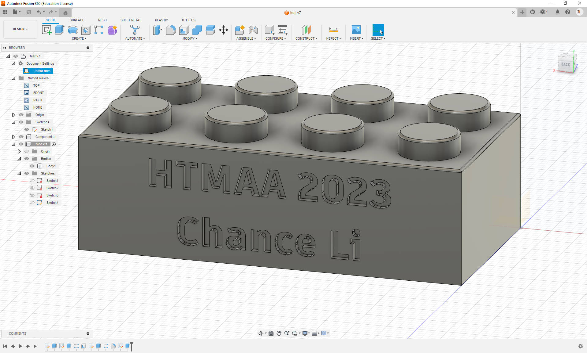
CAD Process
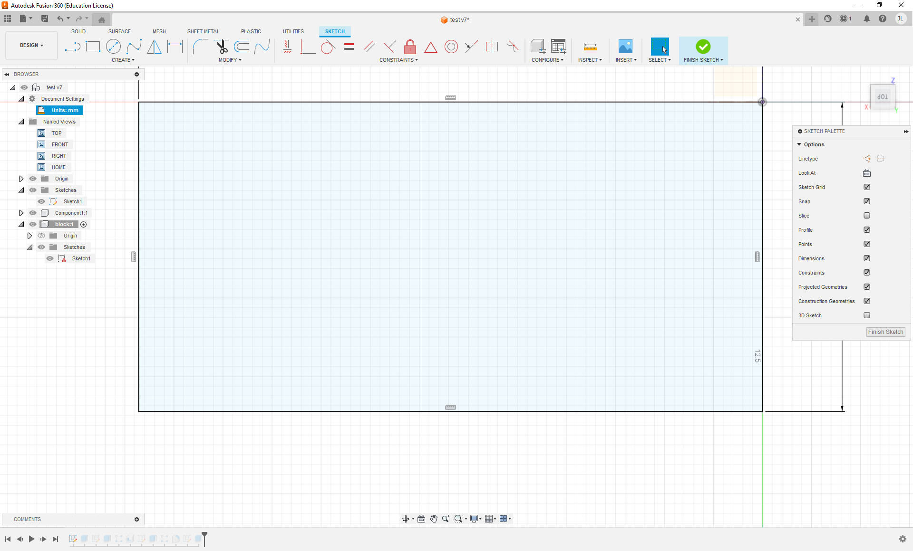
 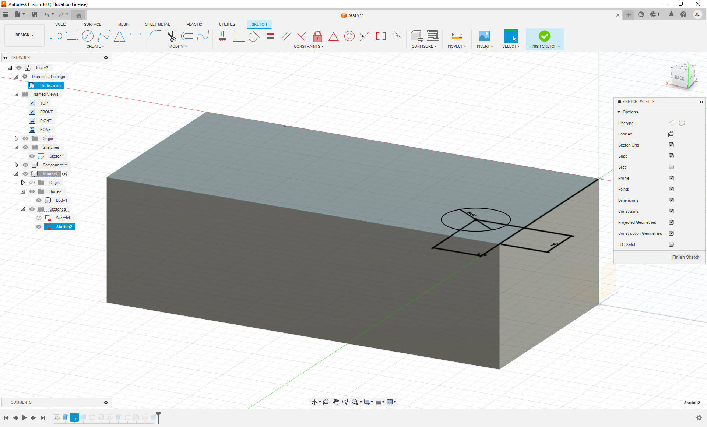
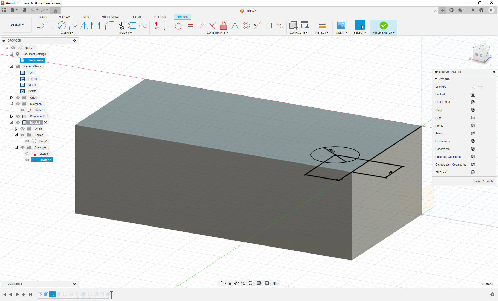

 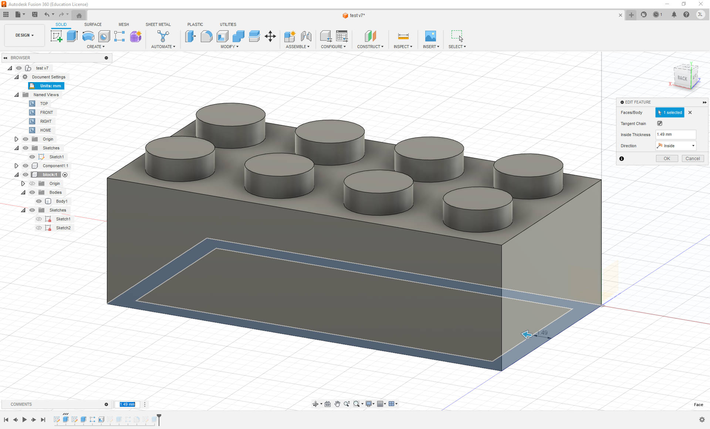
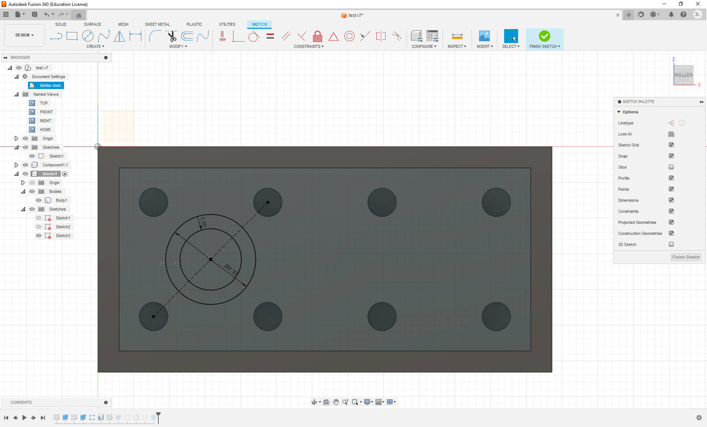
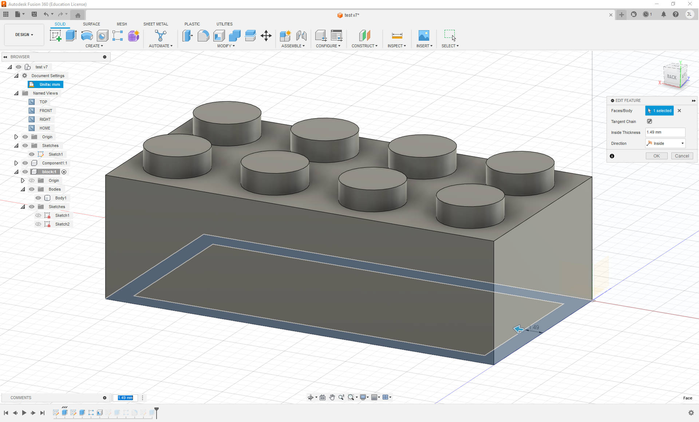
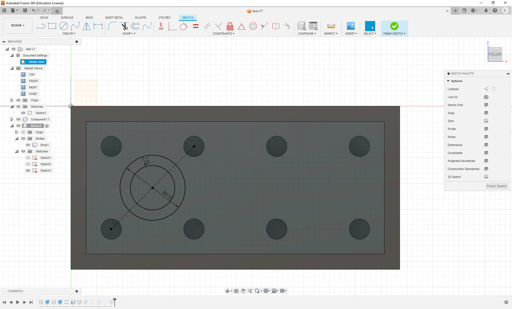
 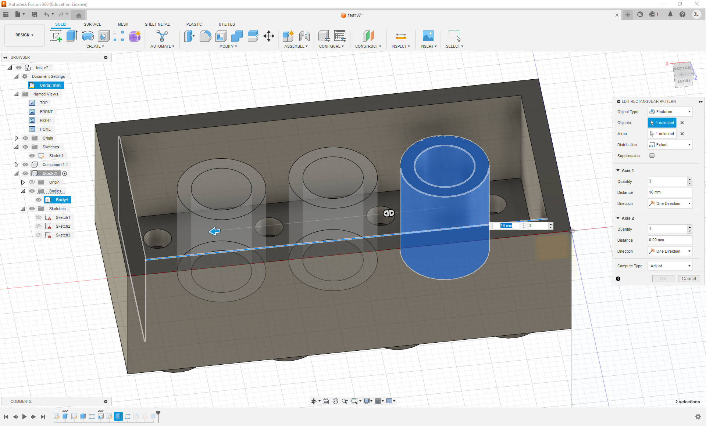
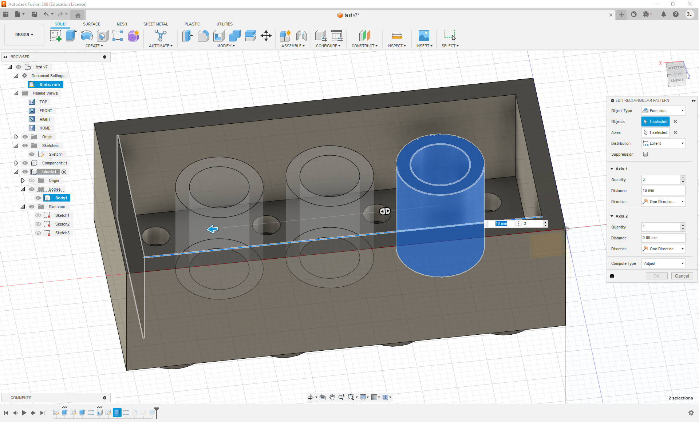
 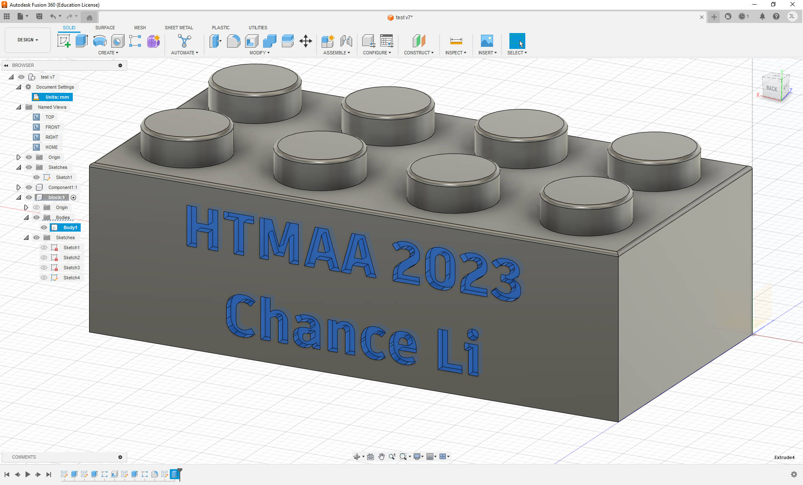
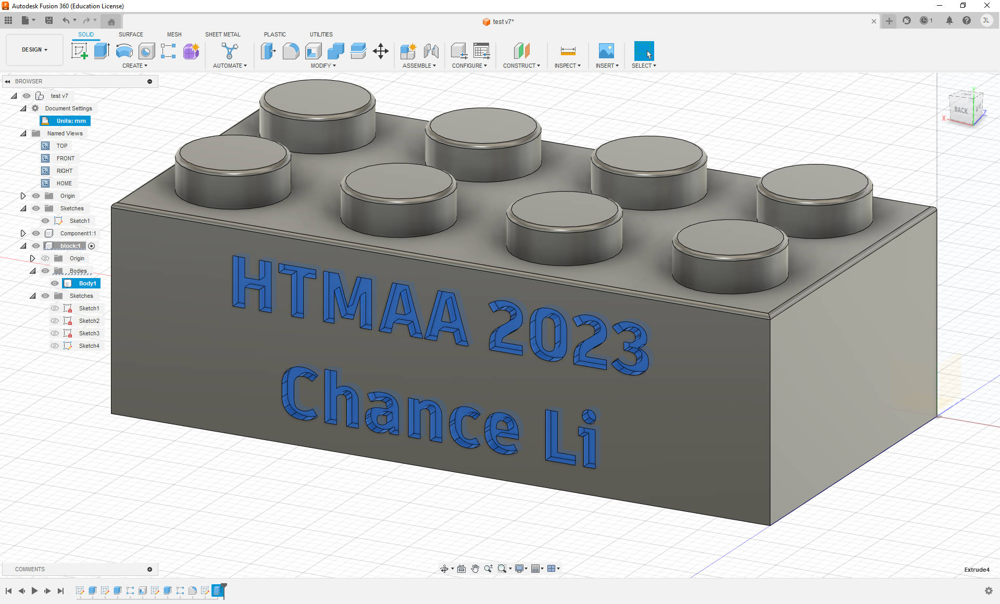